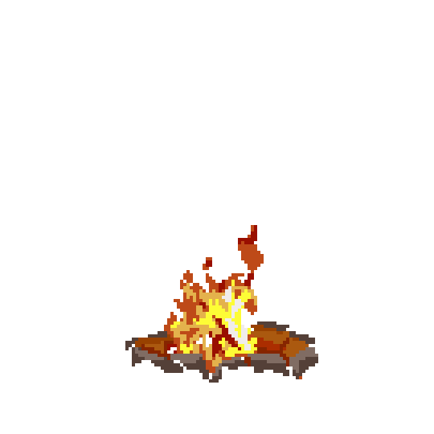

Captcha-Approved Software Dev / Musician & Producer / Certified Dungeoneer
Hi, I'm Jesper — a software developer with a passion for clean code, agile methodologies, and continuous improvement.
I'm also the designated "Forever DM" of my extended friend group. This site is my quest log, a place where you can get to know me,
both personally and professionally. I hope you're ready for an exciting journey!
In many ways, I build software like I'm creating a story: Clear roles, tight iterations, legendary rewards, and plenty of room for fun and character development.
The title of that narrative? Creative Sun (.cs). My main quest is setting up elegant, maintainable systems and crafting joyful developer experiences.
Outside of coding, I write music, read books, and play both video games and tabletop RPGs.
// Wanna know more about me? Scroll down, explore the site, or check out my socials — there are plenty of rabbit holes to follow.
As mentioned above, my name is Jesper /*+=*/ Kloster Frydendahl.
I'm an experienced software engineer and solution architect,
who thrives in collaborative environments where ideas move quickly and teams iterate toward better solutions.
🔧 What I Do
I focus on developing robust software and improving developer experience (DevEx).
This often translates to refining workflows, improving tooling, and helping teams build systems that remain understandable and maintainable as they grow.
My work is grounded in agile principles and iterative development, as practical tools for learning, adapting, and delivering value continuously.
🚀 My Approach
I believe Clean Code is one of the most powerful tools a team has for maintaining productivity and long-term system health.
By fostering a culture of curiosity and engagement, I aim to design solutions that are not only functional but also elegant and sustainable.
The best software rarely appears fully formed. It emerges through close collaboration, honest feedback and responsible development.
🤝 Let's Connect
I'm always open to discussing projects, sharing insights, or exploring new opportunities.
Feel free to reach out via my socials below — I look forward to hearing from you!
LinkedIn: @jesperfrydendahl
GitHub: @jkfrydendahl
Facebook: @jkfrydendahl
Congratulations, you've made it this far! Too tired to make it back home before nightfall? No worries my friend. Take a rest by the fire instead :-)

{kind=link}
{kind=link}
{kind=link}
{kind=link}